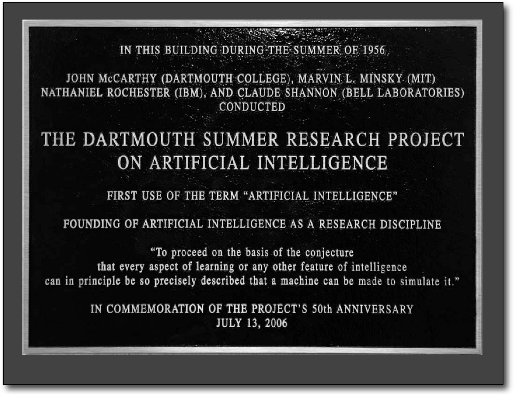

|
Al Doilea Război Mondial Testul Turing și cele trei legi ale roboticii Diferența între inteligență și mimarea ei Primii roboți inteligenți – nașterea reală a inteligenței artificiale Workshop-ul de la Colegiul Dartmouth |
Workshop-ul de la Colegiul Dartmouth Domeniul cercetării IA s-a născut la un workshopla Colegiul Dartmouth(d) în 1956.Participantii Allen Newell(CMU), Herbert Simon (CMU), John McCarthy (MIT), Marvin Minsky (MIT) și Arthur Samuel(IBM) au devenit fondatorii și liderii cercetarii IA.Ei și studenții lor au produs programe pe care presa le-a descris ca fiind „uimitoare“:calculatoarele învățau strategii de dame (și până în 1959 ajunseseră să joace mai bine decât media jucătorilor umani),să rezolve probleme de algebră, să demonstreze teoreme logice (Logic Theorist), prima rulare c. 1956) și să vorbească în engleză.Până la mijlocul anilor 1960, cercetarea în SUA a fost finanțată în mare măsură de Departamentul Apărării,și s-au înființat laboratoare în întreaga lume.Fondatorii IA erau optimiști în privința viitorului: Herbert Simon prezicea: „mașinile vor fi capabile, în decurs de douăzeci de ani, să facă orice lucru poate face un om”. Marvin Minsky era de acord, scriind: „într-o generație... problema creării «inteligenței artificiale» va fi rezolvată substanțial”.Ei nu puteau însă identifica dificultatea unor sarcini rămase de realizat. Progresul a încetinit, iar în 1974, în urma criticii lui James Lighthill și a presiunii continue a Congresului SUA de a finanța proiecte mai productive, guvernele american și britanic au întrerupt cercetarea exploratorie în IA. Următorii câțiva ani aveau mai târziu să fie numiți „iarna IA(”, o perioadă în care obținerea de finanțare pentru proiectele de IA a fost dificilă. La începutul anilor 1980, cercetarea IA a fost revitalizată de succesul comercial al unor sisteme expert,o formă de programe IA care simulau cunoștințele și abilitățile analitice ale experților umani. Până în 1985, piața pentru IA a ajuns la peste un miliard de dolari. În același timp, proiectul japonez de calculator de generația a cincea a inspirat guvernele american și britanic să reînceapă finanțarea cercetării academice. Cu toate acestea, începând cu prăbușirea pieței de mașini Lisp în 1987, IA a căzut din nou în dizgrație și a început o a doua pauză de durată. La sfârșitul anilor 1990 și începutul secolului al XXI-lea, IA a început să fie folosită pentru logistică, data mining, diagnostic medical și în alte domenii. Succesul s-a datorat creșterii puterii de calcul (vezi Legea lui Moore), accentului mai mare pus pe rezolvarea problemelor specifice, legături noi între IA și alte domenii (cum ar fi statistica, economia și matematica) și angajamentul cercetătorilor față de metodele matematice și standardele științifice.Deep Blue a devenit primul sistem de joc de șah pe calculator care l-a învins pe campionul mondial de șah, Garry Kasparov, la 11 mai 1997. În 2011, la o emisiune-concursJeopardy!, într-un meci demonstrativ, sistemul de răspuns la întrebări al IBM, Watson, i-a învins detașat pe cei mai mari doi campioni la Jeopardy!, Brad Rutter și Ken Jennings.Calculatoarele mai rapide, îmbunătățirile algoritmice și accesul la cantități mari de date au permis progresul învățării automate și percepției mașinilor; metodele de învățare profundă mari consumatoare de date au început să domine testele de acuratețe prin jurul anului 2012. Kinect, care oferă o interfață 3D de mișcare corporală pentru Xbox 360 și Xbox One, utilizează algoritmi care au rezultat din îndelungate cercetări de IA, la fel ca asistenții personali inteligenți din smartphone-uri.În martie 2016, AlphaGo a câștigat 4 din 5 jocuri de go într-un meci cu campionul la go Lee Se-dol, devenind primul sistem de joc go care a învins un jucător profesionist de go fără handicap. La Future of Go Summitdin 2017, AlphaGo(d) a câștigat un meci de trei jocuri cu Ke Jie, la acea vreme deținea locul 1 în clasamentul mondial de clasament de doi ani. Acest lucru a marcat finalizarea unui reper important în dezvoltarea inteligenței artificiale, deoarece go este un joc extrem de complex, mult mai complex decât șahul. Potrivit lui Jack Clark de la Bloomberg, anul 2015 a fost un an de referință pentru inteligența artificială, numărul de proiecte software care utilizează IA la Google crescând de „utilizare sporadică” în 2012 la peste 2.700 de proiecte. Clark prezintă, de asemenea, date factuale care indică faptul că ratele de eroare din software-ul de procesare a imaginilor au scăzut semnificativ începând cu 2011. El atribuie acest lucru unei creșteri a rețelelor neurale accesibile, datorită creșterii infrastructurii de cloud computing și a creșterii numărului de instrumente și seturi de date pentru cercetare. Alte exemple menționate includ dezvoltarea de către Microsoft a unui sistem Skype care poate traduce automat dintr-o limbă în alta și sistemul Facebook care poate descrie imaginile pentru nevăzători. Într-un sondaj din 2017, una din cinci companii a raportat că „a încorporat IA în anumite oferte sau procese”.În preajma lui 2016, China a accelerat foarte mult finanțarea guvernamentală; având în vedere cantitatea mare de date disponibilă acolo și producția sa de cercetare în creștere rapidă, unii observatori consideră că ar putea fi pe cale să devină o „superputere IA”. |